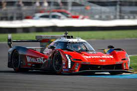
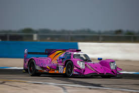
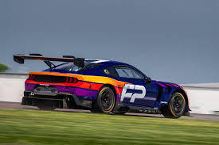

Categorias e Classificação
HYPERCAR:

São um Protótipos construídos para a categoria. Permitem maior liberdade de design e podem ser desenvolvidos com ou sem um sistema híbrido. Quando presente, o sistema híbrido pode ser instalado no eixo dianteiro para fornecer tração nas quatro rodas.
LMP2:

A classe Le Mans Prototype 2 (LMP2) é uma categoria de protótipos de corrida de cockpit fechado, projetada para ser mais acessível e focada em equipes privadas e pilotos semiprofissionais. Embora já tenha sido a segunda classe mais alta no Campeonato Mundial de Endurance (WEC), a LMP2 agora brilha em campeonatos regionais e, principalmente, nas 24 Horas de Le Mans.
GT3:

A classe GT3, formalmente conhecida como Grupo GT3, é uma categoria de carros de corrida de grande turismo que se tornou o padrão global em competições de endurance e sprint. Regulamentada pela FIA (Federação Internacional de Automobilismo), ela equilibra carros de diferentes fabricantes para garantir corridas competitivas.